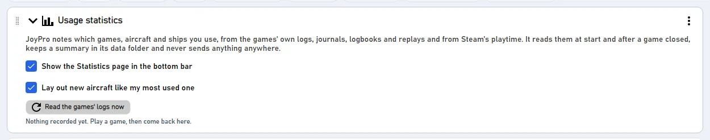

#Proje sayfası
DüğmeyazıldıAraç ipucu Bileşenin resmî sürüm sayfasını tarayıcınızda açar
Bir bileşen kartında: bileşenin resmî sürüm sayfasını tarayıcınızda açar; orada kendi projesi onu tanıtır ve indirmelerini sunar.
Ayarlar sayfası, JoyPro'nun her ayarını açılıp kapanan 25 bölümde tutar. Bir arama kutusu bir ayarı bir sözcükle bulur (“tepsi”, “güncelleme”, “fotoğraf”), üstteki sekmeler bir bölüme atlar ve bölümleri kendi sıranıza koyabilirsiniz. Her ayar anında saklanır ve yeniden başlatmadan sonra da kalır; Kaydet düğmesi yoktur.


İlk başlangıçta yalnızca Oyunlar açılır; geri kalan her şey bir tık uzaktadır. Çoğu kişinin yalnızca Oyunlar, Görünüm, Dil ve JoyPro hakkında ve güncellemeler bölümlerine ihtiyacı olur.
| Bölüm | Orada ne ayarlarsınız |
|---|---|
| Oyunlar | Hangi oyunlara sahip olduğunuz, bağlı klasörler, oyun yapılandırma izleyicisi, JoyPro'nun kullandığı vJoy cihazı |
| Atamalar | Girişi izle, basılı duran düğmelerin kaydedilmesi |
| Turlar | Yeniden başlatmak için karşılama ekranı, yardım modu (F1) ve her tur |
| Başlangıç | Başlangıçta son profili aç |
| Alt çubuktaki sayfalar | Sayfaları gizleme, sıralarını değiştirme |
| Dil | JoyPro'nun dili |
| Görünüm | Açık, koyu veya kendi renkleriniz, metin boyutu, arayüz ölçeği, tema düzenleyici |
| Arka planda çalıştır | Oyunlarınızı izlemeyi sürdüren bildirim alanı yardımcısı |
| Onaylar | JoyPro'nun bir değişiklikten önce sorduğu sorular |
| JoyPro hakkında ve güncellemeler | Sürüm, proje sayfası, güncellemeler |
| Gizlilik | Üreticilerin fotoğrafları, resim paketleri, oyun kapakları |
| Kullanım istatistikleri | İstatistikler sayfası, en çok kullandığınız uçakların sıralaması |
| Telemetri kaydı | Uçuşlarınızı Tacview gibi kaydedin |
| Çizimler | JoyPro'nun cihazlarınızı nasıl çizdiği; yerleşim değişikliklerinizi sıfırlama |
| Sorun bildir | Bir sorunu bulmak için gereken her şeyi içeren tek bir zip |
| Yerel yapay zekâ | İsteğe bağlı dil modeli |
| Bileşenler | vJoy, HidHide, ViGEmBus ve diğer isteğe bağlı programlar |
| Cihazlar | Cihazlarınız, adları, bir cihazı değiştirme veya kaldırma |
| Komut listeleri (DB) ve oyun yolları | Uzman bilgileri |
| DCS: varsayılan atamalar | DCS kurulumundaki DCS'in kendi varsayılan atamaları |
| DCS, Star Citizen ve IL-2 komut listeleri | Komut listelerinin uzman güncellemeleri |
| Oyunların kuvvet geri bildirimi ayarları | Oyunların kendi kuvvet geri bildirimi seçenekleri |
| DCS kuvvet geri bildirimi: değiştirme ve ters çevirme | Cihaz başına DCS'in kuvvet geri bildirimi yönü |


JoyPro'nun desteklediği ve sizde bulunan her oyun için kapağıyla, “Yüklü” veya “Yüklü değil” bilgisiyle, nerede olduğuyla ve kontrollerini nerede tuttuğuyla bir kart.
gui.vromfs.bin ve lang.vromfs.bin dosyalarını salt okunur olarak açar. Kapalı: yalnızca JoyPro'nun bildiği War Thunder eylemlerinin kendi listesi.Burada bir oyunda hiçbir şey değişmez. Bağlı bir klasör, içe ve dışa aktarmanın nereden okuyup nereye yazacağını belirler; gizli bir oyun dışa aktarma kartı almaz ve izlenmez.


Kurulum sihirbazının Kafa takibi veya VR kullanıyor musunuz? sorusuna verdiğiniz yanıt. Kafa takibi (TrackIR, yüz takibi yapan bir web kamerası, bir Tobii göz izleyici) veya VR ile başınızı çevirerek etrafa bakarsınız.
JoyPro'nun tüm turları tek bir yerde (Yardım modu ve turlar):


Başlangıçta son profili aç (varsayılan olarak açık), en son açık olan profili açar; yolu aşağıda gösterilir. Not, profil geçmişini açıklar: her değişiklik kendiliğinden kaydedilir ve her kayıt Geçmiş'te (üst çubuk) bir sürümdür. Eski sürümler seyreltilir: son günün tümü, ardından 7 gün boyunca saatte bir, 60 gün boyunca günde bir, sonrasında haftada bir; profil başına en fazla 200 MB ve toplamda 1 GB. Sakladığınız sürümler kalır.


Alt çubuktaki her sayfa için bir satır. Kullanmadığınız bir sayfanın işaretini kaldırın; sırayı değiştirmek için bir satırı tutamacından sürükleyin (veya okları kullanın). Gizli bir sayfa yine de başka sayfalardan açılır (örneğin Değiştiriciler sayfasını aç) ve açık olduğu sürece çubukta görünür. Ayarlar gizlenemez. Varsayılana sıfırla, tüm sayfalar gösterilecek şekilde JoyPro'nun sırasını geri getirir.


JoyPro dili: İngilizce ve 38 diğer dil veya Windows dili (Windows'un görüntüleme dili; JoyPro'da yoksa İngilizce). Çeviriler makine tarafından yapılır ve tuhaf görünebilir; oyun komut adları oyunun verdiği adla kalır. Bildirim alanı yardımcısının menüsü dili izler.


JoyPro, bir oyunda kontrolleri değiştirdiğinizi yalnızca çalışırken fark edebilir. Küçük bir yardımcı, JoyPro'yu kapattıktan sonra bildirim alanında bir simge olarak izlemeyi sürdürür; fark edilir bir CPU kullanmaz ve birkaç MB bellek kullanır.


JoyPro, geri alınması zor bir değişiklikten önce sorar. Kapatabileceğiniz sorular burada listelenir: bir ilişkiden bir eylemi kaldırma, henüz dışa aktarmadığınız değişiklikleri atan bir içe aktarma, profilin hiç içe aktarmadığı bir oyuna ilk dışa aktarma, atamaları kaldıran bir dışa aktarma ve içe aktarmadaki izleyici ipucu. “Bir daha sorma” ile kapattığınız bir soru burada işaretsiz görünür; Her şeyi yeniden sor hepsini yeniden açar.


Sürüm, derleme ve lisans satırı, Proje sayfası ve Sürüm sayfası, üçüncü taraf bildirimleri ve güncellemeler: Güncellemeleri denetle, Güncellemeyi kur (yeni sürümü indirir, denetler, kurar ve JoyPro'yu yeniden başlatır), Açılışta güncellemeleri denetle ve atladığınız bir sürüm için Yeniden sun. “Güncellemelerin geldiği yer (uzmanlar için)”, JoyPro'nun sürümlerini kurduğu GitHub deposunu belirtir.


JoyPro'nun hesabı ve telemetrisi yoktur. Yalnızca güncelleme denetimleri, üreticilerin ürün fotoğrafları (siz evet dedikten sonra), bu bilgisayarda eksik olan oyun kapakları, isteğe bağlı yapay zekâ modeli indirmesi, isteğe bağlı sürücüler ve eksik bir .NET Framework için çevrimiçi olur.


JoyPro, oyunların kendi günlüklerinden ve Steam'in oynama süresinden hangi oyunları, uçakları ve gemileri kullandığınızı not eder ve bu bilgisayarda bir özet tutar.


JoyPro'nun telemetrisini okuduğu her oyun için, Tacview'in DCS için yaptığı gibi, her raundu, görevi veya uçuşu oyunun gönderdiği tüm telemetriyle (konum, duruş, hızlar, kontroller, motorlar, silahlar, olaylar) kaydeder.


JoyPro'nun Yerleşim sayfasında ve cihaz kartlarında cihazlarınızı nasıl çizdiği (çizgiler veya cel-shaded, JoyPro'nun renkleri veya kendi renkleriniz); ekran ile özet kâğıtları ve dışa aktarmalar için ayrı ayrı. Tüm yerleşim değişikliklerimi sıfırla... her cihazın resmini JoyPro'nun varsayılanına döndürür (işaretçi konumlarınız, tablolar ve çizgiler, yeniden adlandırılan parçalar, fotoğraflar, kendi cihaz tanımlarınız ve profilin kullandığı yerleşim dosyaları; dosyaların kendisi kalır); hemen ardından Sıfırlamayı geri al onları geri getirir. Tek bir cihaz için: Yerleşim sayfası, onun Model... menüsü. Çizim denetimleri Yerleşim sayfasında açıklanır.


Arka plan günlüklerini şu süre sakla n gün (varsayılan 30; toplamda en fazla 200 MB) ve Günlük Klasörünü Aç aşağıdadır.


İsteğe bağlı. JoyPro'nun çevrimdışı kuralları her zaman çalışır; ücretsiz, açık kaynaklı bir dil modeli ek olarak Yapay zekâyla yönet, Yapay zekâyla düzenle, JoyPro yardımcısı ve Açıklamaya göre grupla içindeki serbest cümleleri okuyabilir ve JoyPro her yanıtı denetler. Yalnızca siz kullanırken bu bilgisayarda çalışır.
llama-server.exe ve .gguf dosyasının yolları, Bu bilgisayarda bul, Bu dosyaları kullan, Kullanmayı bırak.


Yeniden bak, bağlı her kol, gaz kolu ve pedal ile profilinizin kullandığı her cihaz için bir kart gösterir: resmi (cihazı Yerleşim sayfasında açmak için tıklayın), adı, bağlı olup olmadığı ve kaç ataması olduğu.


JoyPro'nun her oyun hakkında bildikleriyle ilgili Çıktı panelinde salt okunur yanıtlar: DB Özeti, DB Denetimi, DB Listesi, DB Oyunları, DB Uçakları, DB Parmak İzi, Oyun Yolları, Oyun Listesi, Oyunları Algıla; bir oyun ve bir uçak için filtrelerle. Bir güncellemeden sonra bir oyunun yeni komutlarını okumak için Başlangıç sayfasındaki oyun kartında Güncelle'yi kullanın.


DCS her cihaza kendi varsayılan atamalarını koyar. JoyPro'nun DCS dışa aktarması bunları yazdığı her cihazdan, her uçakta zaten kaldırır. Buradaki iki seçenek, tüm cihazlar için DCS kurulumunun kendisini değiştirir; ikisi de siz açmadıkça kapalıdır.
<file>.nocombo.bak olarak saklanır. UI katmanının varsayılan atamalarını koru (menüler, VR), UI katmanını olduğu gibi bırakır.Bu seçenekler DCS'in kendi dosyalarını değiştirir. Bazı çok oyunculu sunucular, bu seçenekler açıkken sizi içeri almaz; DCS dosyalarını geri yükle DCS'in dosyalarını geri koyar. Bir DCS güncellemesi veya onarımı özgün dosyaları geri getirir; JoyPro bir sonraki başlangıcında seçeneği yeniden uygular.


Normalde bir oyunun listesi, Başlangıç sayfasındaki kartında Güncelle ile oluşturulur. Burada: yalnızca bazı DCS uçakları, yazmadan bir deneme çalıştırması ve eski tıklama modu.


Bir oyunun sunduğu her kuvvet geri bildirimi ayarı (güç, efektler, cihaz başına ve DCS'te uçak başına). JoyPro, ayarladığınız değerleri profilde saklar ve dışa aktarmada oyuna yazar; saklamadığınız ayarlar oyundaki gibi kalır. Oyun, Cihaz ve Uçak seçin (Tüm uçaklar veya değerleri öncelikli olan tek bir uçak), değerleri değiştirin, ardından Uygula'ya basın. Geri döndür uygulanmamış değişiklikleri atar, bir satırdaki Kaldır tek bir ayarın saklanmasını durdurur, Temizle gösterilen tüm saklanan ayarları kaldırır. JoyPro'nun kendi telemetri kuvvet geri bildirimi Kuvvet Geri Bildirimi sayfasındadır.


Kuvvet geri bildirimli kolunuz DCS'te yanlış yöne itiyorsa: onun için Ekseni Takas Et, X'i Ters Çevir veya Y'yi Ters Çevir'i işaretleyin, ardından Uygula'ya basın. Temizle cihaza DCS'in varsayılanlarını geri verir. Filtreli (Yalnızca bağlı, Yalnızca profil) bir cihaz tablosu, seçim düğmeleri ve Seçilenleri Uygula / Seçilenleri Temizle / Tümünü Temizle; “Manual single-device (advanced)” tek bir cihazı adıyla ayarlar.
DCS kuvvet geri bildirimi yönünü başlangıçta cihaz başına okur: takas edilmiş veya ters çevrilmiş bir cihaz her uçakta diğer yöne iter.
%APPDATA%\JoyPro2\ui-settings.json (pencere, sayfalar, açık bölümler ve sıraları, tema, dil, onaylar, gizlilik yanıtları, bildirim alanı, yerel yapay zekâ seçimleri ...), her değişiklikte hemen yazılır; temalar yanındaki JSON dosyalarındadır. Görünüm modeli: MainWindowViewModel.SettingsPage.cs (bölümler, arama, sıra; SettingsSectionDefaults kimlikleri, başlıkları ve arama anahtar sözcüklerini tutar), kontroller Views/Controls/SettingsSection.cs, SettingsSectionsPanel.cs, SettingsTabStrip.cs.engine games installs, engine games install set, engine games install disable, engine games config set üzerinden (MainWindowViewModel.GameInstalls.cs, GameSetup.cs).MainWindowViewModel.NavPages.cs; görünüm: MainWindowViewModel.Appearance.cs, Services/ThemeService.cs; dil: MainWindowViewModel.Language.cs (Yerelleştirme).MainWindowViewModel.Updates.cs (Güncellemeler); rapor: MainWindowViewModel.AppServices.cs, engine support bundle (Günlük kaydı).engine usage harvest, engine usage ranking, engine usage pin (Kullanım istatistikleri); telemetri kaydı: MainWindowViewModel.TelemetryRecording.cs, engine telemetry sessions, engine telemetry export (Telemetri kaydı).engine llm status, engine llm download, engine llm use-local, engine llm start (Doğal dille gruplama); bileşenler: MainWindowViewModel.Components.cs (Bileşenler).engine devices list, engine devices inputs, engine devices exchange, engine devices remove, engine games devices (Cihazlar).engine dcs strip-defaults, engine dcs device-luas, engine dcs defaults restore (MainWindowViewModel.DcsDefaults.cs); komut listeleri: engine dcs refresh id, engine dcs refresh clean, engine db refresh-starcitizen, engine db refresh-il2; uzman DB yanıtları: engine db summary, engine db check, engine db list, engine db games, engine db planes, engine db fingerprint, engine games paths, engine games list, engine games detect.engine ffb models, engine ffb show, engine ffb set, engine ffb clear (profilde saklanır, dışa aktarmada yazılır; MainWindowViewModel.FfbSettings.cs); DCS değiştirme/ters çevirme: engine dcs ffb list, engine dcs ffb set, engine dcs ffb clear.Bu sayfanın arkasındaki, depodan oluşturulan özellik belgeleri:
190 denetim, programın kaynak kodundan okundu: 190 yazıldı, 0 kaynaktaki bilgilerle (araç ipucu, kod yorumu, motor çağrısı), 0 henüz genişletilecek.
Araç ipucu Bileşenin resmî sürüm sayfasını tarayıcınızda açar
Bir bileşen kartında: bileşenin resmî sürüm sayfasını tarayıcınızda açar; orada kendi projesi onu tanıtır ve indirmelerini sunar.
Araç ipucu Onar veya kaldır: bileşenin kendi kaldırıcısının bulunduğu Windows Yüklü uygulamalar listesini açar
Kurulu bir bileşenin kartında: Windows'un “Yüklü uygulamalar” listesini açar.
Bileşeni orada kendi kaldırıcısıyla onarın veya kaldırın; JoyPro bileşenleri kendisi kaldırmaz.
Bir bileşen kartında: bileşenin lisansını tarayıcınızda resmî proje sayfasında açar.
Evet demek için bunu işaretleyin. Ardından JoyPro yardımcıyı kurabilir.
Evet demek için bunu işaretleyin: JoyPro bu ücretsiz yardımcıyı indirip kurabilir.
“Yükle” yalnızca bu işaretliyken çalışır.
Bu ücretsiz yardımcıyı indirir ve yükler. Önce kutu işaretlenir.
Bu ücretsiz yardımcıyı indirir ve yükler: bileşenin adını taşıyan “yükle” düğmesi.
Yalnızca “Okudum ...” işaretinden sonra çalışır, bu yüzden önce o kutuyu işaretleyin.
Bir bileşen inerken gösterilir: indirmeyi durdurur.
Zaten çalışan bir yükleyiciyi JoyPro durdurmaz; onun kendi penceresindeki “İptal”i kullanın.
Araç ipucu Açık: eylemin x'i önce 'Bu eylem kaldırılsın mı?' diye sorar. Kapalı: hemen kaldırılır (Ctrl+Z geri alır).
Açık: “İlişkiler” sayfasında bir eylemin x'i önce “Bu eylem kaldırılsın mı?” diye sorar.
Kapalı: eylem hemen kaldırılır; Ctrl+Z onu yine geri alır.
Araç ipucu Açık: Oyun kartındaki İçe aktar, profilde o oyun için henüz oyunda olmayan değişiklikler varsa önce sorar (Önce dışa aktar, İçe aktar, İptal). Kapalı: hemen içe aktarır (Geçmiş değişiklikleri geri getirir).
Açık: profilinizde bir oyun için henüz oyunda olmayan değişiklikler varsa, oyun kartındaki “İçe aktar” önce “Önce dışa aktar”, “İçe aktar” ve “İptal” seçenekleriyle sorar.
Kapalı: hemen içe aktarır; profilin “Geçmiş”inde önceki sürüm yine durur.
Açık: bu profilin hiç içe aktarmadığı bir oyunun ilk dışa aktarması “Önce içe aktar?” diye sorar; böylece oyunun kendi atamaları sürpriz şekilde kaybolmaz.
Kapalı: hemen dışa aktarır.
Açık: atamaları kaldıran bir dışa aktarma, yazmadan önce bir kez sorar.
Kapalı: hemen yazar.
Açık: içe aktarma, JoyPro'nun oyunda yaptığınız kontrol değişiklikleri için oyunu izleyebileceği ipucunu gösterir.
Kapalı: ipucu gizlenir.
Araç ipucu Kapattığınız her soru yeniden sorulur
Bu bölümün her sorusunu yeniden işaretler; böylece JoyPro bundan sonra her birini yeniden sorar.
Yalnızca en az bir soru kapalıyken etkindir.
Araç ipucu Yerel yapay zekâyı kurulu modelle açar; bir sonraki istekle yüklenir
Yapay zekâ eylemlerinin yanındaki “Yerel yapay zekâ” etiketinde, bir model kurulu ama kapalıyken gösterilir: yerel yapay zekâyı o modelle tek tıklamayla açar; bir sonraki isteğinizle yüklenir.
Model yoksa bunun yerine “Ayarlar” > “Yerel yapay zekâ”yı açar.
Araç ipucu Ayarlar > Yerel yapay zekâ bölümünü açar: bir model indirin (önce boyut ve lisans) veya kendi llama.cpp'nizi kullanın
“Yerel yapay zekâ” etiketinde “Yerel yapay zekâyı kur”: “Ayarlar” > “Yerel yapay zekâ”yı açar ve oraya kaydırır; orada bir model indirirsiniz veya JoyPro'yu kendi llama.cpp'nize yönlendirirsiniz.
Kendi başına hiçbir şeyi değiştirmez.
Araç ipucu Yerel yapay zekâ modelini hemen sonlandırır ve belleğini boşaltır (sonraki istek onu yeniden yükler)
Yerel yapay zekâ modeli yüklüyken gösterilen “Şimdi durdur”: modeli hemen sonlandırır ve belleğini boşaltır.
Yerel yapay zekâ açık kalır; bir sonraki yapay zekâ isteği modeli yeniden yükler.
Araç ipucu Açık: aşağıdaki bir oyun çalışıp telemetri gönderirken JoyPro her tur, görev veya uçuş için bir dosya yazar. Kapalı: hiçbir şey kaydedilmez ve hiçbir şeye bakılmaz.
Varsayılan olarak kapalı. Açık: işaretli bir oyun çalışırken ve telemetri gönderirken JoyPro aşağıdaki klasöre tur, görev veya uçuş başına bir kayıt yazar.
Kapalı: hiçbir şey kaydedilmez ve JoyPro çalışan oyunları aramaz.
Araç ipucu Kayıtların gittiği yer, herhangi bir sürücüde (boş yeri olan bir sürücü: bir saat yaklaşık 10 ila 50 MB)
“Klasör” > “Seç...”: yeni kayıtların herhangi bir sürücüde nereye gideceğini seçer.
“Kaydedilen oturumlar” listesi o zaman o klasörün kayıtlarını gösterir; mevcut kayıtlar taşınmaz.
Araç ipucu JoyPro'nun veri klasörüne dön
Kendi klasörünüzü seçtiğinizde gösterilir: yeni kayıtlar yeniden JoyPro'nun veri klasörüne gider ve liste oradaki kayıtları gösterir.
Klasörünüzdeki kayıtlar oldukları yerde kalır.
Kayıtlar klasörünü Explorer'da açar.
Araç ipucu Değerlerin yanında oyunun kendi paketleri, yanıtları ve dosyaları; bunları okuyan araçlar için. Yaklaşık iki kat boyut.
Varsayılan olarak açık: her kayıt, onları okuyan araçlar için değerlerin yanında oyunun kendi paketlerini, yanıtlarını ve dosyalarını da saklar.
Bir kayıt o zaman yaklaşık iki kat büyük olur.
Telemetri kaydının bir oyunu: işaretli oyunlar çalışırken ve telemetri gönderirken kaydedilir.
Alttaki satır, JoyPro'nun o oyun için neyi dinlediğini söyler.
Kaydedilen oturumların listesini kayıtlar klasöründen yeniden okur.
Araç ipucu Tacview'un açtığı bir .zip.acmi dosyası: rota, duruş, hızlar ve oyunun bildirdiği diğer nesneler. Yalnızca telemetrisinde konum olan oyunlar için.
Seçili kaydı, Tacview'un açtığı bir .zip.acmi dosyası olarak kayıtların yanındaki Exports klasörüne yazar ve onu Explorer'da gösterir.
Yalnızca telemetrisinde konum olan oyunlar için.
Araç ipucu Her an için tüm değerlerin tek bir tablosunu, olayları, kanal listesini ve her kanal için küçük bir dosya içeren bir klasör (virgülle ayrılmış, ondalık nokta).
Seçili kaydı, kayıtların yanındaki Exports klasörüne CSV dosyalarından oluşan bir klasör olarak yazar: her an için her değerin bir tablosu, olaylar, kanal listesi ve kanal başına küçük bir dosya.
Explorer klasörü açar.
Seçili kaydı siler.
“Ayarlarda ara” içindeki x: aramayı temizler; böylece her bölüm yeniden görünür.
“Ayarlar” sayfasının her bölümünü açar.
Hangi bölümlerin açık olduğu bir sonraki açılış için hatırlanır.
Her bölümü kapatır; böylece sayfa yalnızca başlıklarını gösterir; ihtiyacınız olanı tıklayarak açın.
“Tümünü aç” / “Tümünü kapat” yanındaki küçük ok: bölümleri JoyPro'nun sırasına geri koyar ve yalnızca “Oyunlar” açık kalır.
Yeni sıra bir sonraki açılış için korunur.
Araç ipucu Açık renkler
JoyPro'yu hemen açık renkleriyle gösterir.
Bir sonraki başlatma için saklanır.
Araç ipucu Koyu renkler
JoyPro'yu hemen koyu renkleriyle gösterir.
Bir sonraki başlatma için saklanır.
Araç ipucu Windows ayarını izle
JoyPro, uygulamalar için Windows ayarını izler.
Bir sonraki başlatma için saklanır.
Araç ipucu JoyPro'yu bu temayla göster
Kendi temalarınızdan birinde “Kullan”: JoyPro'yu hemen o temada gösterir.
Bir sonraki başlatma için saklanır.
Araç ipucu Aşağıdaki tema düzenleyicide aç
Kendi temalarınızdan birinde “Düzenle”: onun bir kopyasını aşağıdaki tema düzenleyicisinde açar.
“Kaydet”e veya “Bu temayı kullan”a basana kadar hiçbir şey değişmez.
Araç ipucu Temanın metin boyutu veya %100
“Metin boyutu” yanındaki “Sıfırla”: seçtiğiniz metin boyutunu bırakır; böylece yeniden kullanılan temanın metin boyutu geçerli olur, temanın bir metin boyutu yoksa %100.
Araç ipucu %100'e dön
“Arayüz ölçeği” yanındaki “Sıfırla”: tüm pencere %100'e geri döner.
Tema düzenleyicisi: JoyPro'nun açık renklerinden yeni bir tema başlatır ve onu canlı önizlemeyle düzenleyicide açar.
Yalnızca “Kaydet” veya “Bu temayı kullan” ile bir dosya olarak kaydedilir.
Tema düzenleyicisi: JoyPro'nun koyu renklerinden yeni bir tema başlatır ve onu düzenleyicide açar.
Araç ipucu Birinin sizinle paylaştığı bir tema dosyası (.json)
Tema düzenleyicisi: birinin sizinle paylaştığı bir tema dosyasını seçer.
JoyPro onu denetler, temalar klasörüne kopyalar ve düzenleyicide açar; düzenleyicinin üstündeki satır neyin içe aktarıldığını veya neden aktarılmadığını söyler.
Tema düzenleyicisinin canlı önizlemesinin bir parçası: düğmelerin düzenlenen temada nasıl göründüğünü gösteren örnek bir düğme.
Hiçbir şey yapmaz.
Tema düzenleyicisinin canlı önizlemesinin bir parçası: örnek bir vurgu düğmesi.
Hiçbir şey yapmaz.
Tema düzenleyicisinin canlı önizlemesinin bir parçası: devre dışı örnek bir düğme.
Hiçbir şey yapmaz.
Tema düzenleyicisinin canlı önizlemesinin bir parçası: alt çubuğun örnek bir sayfa düğmesi.
Hiçbir şey yapmaz.
Tema düzenleyicisinin canlı önizlemesinin bir parçası: seçili olarak gösterilen örnek sayfa düğmesi.
Hiçbir şey yapmaz.
Tema düzenleyicisinin canlı önizlemesinin bir parçası: alt çubuğun örnek bir sayfa düğmesi.
Hiçbir şey yapmaz.
Araç ipucu Tüm metinler okunabilir olana kadar metin renklerini açar veya koyulaştırır
Kontrast denetimi okunması zor metinler bulduğunda gösterilir: düzenlenen temanın metin renklerini her metin okunabilir olana kadar açar veya koyulaştırır ve kaç rengin değiştiğini söyler.
Yalnızca “Kaydet” veya “Bu temayı kullan” ile kaydedilir.
Araç ipucu Kaydeder ve JoyPro'yu bu temayla gösterir
Düzenlenen temayı kaydeder ve JoyPro'yu hemen onunla gösterir.
Bir sonraki başlatma için saklanır.
Düzenlenen temayı JoyPro'nun ayarlar klasörüne bir dosya olarak kaydeder.
Kullanılan tema buysa pencere değişikliği hemen gösterir.
Düzenlenen temanın bir kopyasını oluşturur ve kopyayı düzenleyicide açar; sevdiğiniz bir temanın bir çeşidi için.
Araç ipucu Paylaşmak için temayı dosya olarak kaydet
Düzenlenen temayı, bir kopyasını saklamak veya paylaşmak için seçtiğiniz yere bir .json dosyası olarak kaydeder; başkaları onu “İçe aktar...” ile yükler.
Araç ipucu Tüm renkleri temel alınan temaya, yazı tiplerini JoyPro'nunkilere döndür
Düzenlenen temanın her rengini temel aldığı temaya geri getirir; yazı tipleri de JoyPro'nunkilere döner.
Ad kalır ve tema dosyası yalnızca “Kaydet” veya “Bu temayı kullan” ile değişir.
Düzenlenen temanın dosyasını siler. Kullanımdaki tema buysa JoyPro yerleşik bir temaya geri döner.
Araç ipucu İlk başlatma kurulumu: hangi oyunlara sahip olduğunuz, bağlı klasörler (taşınabilir kurulumlar) ve yapılandırma konumları
Oyunlarınızı yeniden arar ve ilk açılış penceresini açar: sahip olduğunuz oyunları işaretleyin, taşınabilir kurulumların klasörlerini bağlayın ve diğer yapılandırma konumlarını ayarlayın.
Orada “Bitti”ye basana kadar hiçbir şey değişmez.
Oyunlarınızı yeniden arar, örneğin bir oyunu kurduktan veya taşıdıktan sonra; buradaki kartları, “Başlangıç” sayfasını ve “Dışa aktar” sayfasını günceller.
Araç ipucu Bir oyunda JoyPro'nun yönettiği kontrolleri değiştirdiğinizde JoyPro, oyun kapandıktan sonra bunları profilinize alıp almayacağını sorar
Varsayılan olarak açık: JoyPro'nun yönettiği kontrolleri bir oyunun içinde değiştirdiğinizde JoyPro bunu oyun kapandıktan sonra fark eder ve değişiklikleri profilinize alıp almayacağını sorar.
İzlenen oyunlar, dışa aktardığınız veya içe aktardığınız ve “Başlangıç” sayfasında izleme için işaretlediğiniz oyunlardır.
Araç ipucu Açık (varsayılan): JoyPro her uçak ve helikopter eylemi için gui.vromfs.bin ve lang.vromfs.bin dosyalarını açar (salt okunur). Kapalı: JoyPro yalnızca bildiği War Thunder eylemlerinin kendi listesini kullanır.
Varsayılan olarak açık: JoyPro War Thunder komut listesini oluştururken her uçak ve helikopter eylemi için oyunun gui.vromfs.bin ve lang.vromfs.bin dosyalarını açar.
Kapalı: JoyPro yalnızca bildiği War Thunder eylemlerinin kendi listesini kullanır.
Araç ipucu HLL Vietnam'ın dosyaları Oodle ile sıkıştırılmıştır ve oyun kendi Oodle kitaplığıyla gelmez. Evet derseniz JoyPro, bu bilgisayardaki başka bir oyunun getirdiğini kullanır (bulunduğu yerden, asla kopyalanmaz). Kapalı: Xbox kolu modunun ihtiyaç duyduğu tek şey olan JoyPro'nun kendi oyun kolu tuşları listesi.
JoyPro'nun Hell Let Loose: Vietnam komut listesini oluştururken sorduğu soruya yanıtınız: işaretliyse JoyPro, oyunun sıkıştırılmış dosyalarını kurulu başka bir oyunun getirdiği Oodle kitaplığıyla, bulunduğu yerden okur.
İşaretsizse: JoyPro'nun gamepad tuşlarının kendi listesi; Xbox kolu modunun ihtiyacı olan da yalnızca budur.
Hell Let Loose: Vietnam'ın dosyalarıyla ilgili yanıtınızı unutur; JoyPro o oyunun komut listesini bir sonraki oluşturuşunda yeniden sorar.
Araç ipucu Bu klasör o zaman oyunun kurulumu sayılır (oyunun klasörü, başlatıcı klasörü veya bin klasörü)
Bir oyun kartında “Klasör seç...”: oyunun klasörünü bağlar.
Bir başlatıcı veya bin klasörü de olur; JoyPro onun için oyunun klasörünü bağlar.
Araç ipucu Oyunun .exe dosyasını veya başlatıcısını seçin; JoyPro oyunun klasörünü bağlar
Bir oyun kartında “.exe seç...”: oyunun programını veya başlatıcısını seçin; JoyPro, “Klasör seç...” gibi, onun için oyunun klasörünü bağlar.
Araç ipucu Klasörünüzü unutun ve oyunu yeniden algılayın
Kendi klasörünüz olan bir oyun kartında “Algılananı kullan”: bağlantıyı unutur; böylece JoyPro oyunu yeniden kendisi algılar.
Oyunun dosyalarına dokunulmaz.
Araç ipucu Sizde yok ya da ilginizi çekmiyor: JoyPro'da her yerde gizli (kartlar, dışa aktarma, izleme, oyun listeleri); kurulu değil sayılır. Atamalarınız kalır.
Bir oyun kartında “Gizle”: sahip olmadığınız veya ilgilenmediğiniz bir oyun için.
JoyPro'nun her yerinde gizlenir ve kurulu değil sayılır; onun için yaptığınız atamalar profilde kalır.
Araç ipucu Bir düğmeye basın (veya bir ekseni uzun mesafe hareket ettirin), Atamalar veya İlişkiler sayfası onun ilişkisine atlar; üzerindeki sonraki ilişki için yeniden basın, önce değiştiricisiz olanlar. Kayıt sırasında veya bir kutuya yazarken çalışmaz.
Varsayılan olarak açık: bir düğmeye basın, “Atamalar” veya “İlişkiler” sayfası onun ilişkisine atlar; üzerindeki bir sonraki ilişki için yeniden basın, önce değiştiricisiz olanlar gelir.
Kayıt sırasında veya bir kutuya yazarken olmaz ve yalnızca JoyPro'nun penceresi öndeyken çalışır.
Araç ipucu Girişi izle atladıktan sonra listenin altındaki kısa not (WarBRD üzerinde BTN 8: Gear). Kapalıyken de liste atlamaya devam eder.
Varsayılan olarak kapalı: “Girişi izle” atladıktan sonra listenin altında kısa bir not neye basıldığını söyler.
Liste bununla da bunsuz da atlar.
Araç ipucu Kaydet yalnızca durumu değişen bir düğmeyi alır; kayıt başlarken zaten basılı olan bir düğme (3 konumlu anahtarın ortası, mod anahtarı) hiç sayılmaz. İşaretliyken: bırakmak o düğme sayılır.
Varsayılan olarak kapalı: kayıt yalnızca durumu değişen bir düğmeyi alır; böylece kayıt başladığında zaten basılı olan bir düğme asla sayılmaz.
İşaretliyse: böyle bir düğmeyi bırakmak o düğme olarak sayılır.
Araç ipucu Açık: ad eşleşmelerinin altında Aynı işlev (eş anlamlı veya açıklamayla bulunan aynı işlev) ve İlgili (katlanmış) gelir. Kapalı: yalnızca adında yazdığınız her sözcük olan eylemler. Aynı anahtar Tümü / Eksenler / Düğmeler yanında da var.
“Ayarlar” > “İlişkiler”, varsayılan olarak açık: “Eylem ekle” araması, adı yazdığınız her kelimeyi içeren eylemlerin altında, sözlerinizin anlamını yapan eylemleri ve daha gevşek eşleşenleri de listeler.
Kapalı: yalnızca bu ad eşleşmeleri.
Etrafa başınızı hareket ettirerek bakıyorsanız bunu seçin.
Etrafa kafa takibi, Tobii göz izleyici veya VR ile bakıyorsanız ya da bunlardan birini edinmeyi planlıyorsanız bunu seçin.
Sonraki her kurulum bu durumda uçuş simülatörlerinde HOTAS'ınıza görünüm veya bakış düğmesi koymaz, yalnızca görünümü ortalamak için bir düğme koyar; böylece düğmeleriniz başka işlevler için boş kalır.
Etrafa kolunuzdaki bir Hat ile bakıyorsanız bunu seçin.
Etrafa kolunuzla veya gaz kolunuzla bakıyorsanız bunu seçin.
Sonraki her kurulum etrafa bakmayı yüksek öncelikle bir Hat'e veya başparmak koluna koyar: topun, silah bırakmanın, karşı önlemlerin, frenlerin, trimin ve hedefin hemen ardından.
Araç ipucu Bu simülatörler için kurulum sihirbazını açar
Simülatörlerinizi yeni yanıtınızla yeniden kurar.
Yanıtınızı değiştirdikten sonra gösterilir: yanıtın ilgilendirdiği kurulu simülatörler için kurulum sihirbazını açar, böylece etrafa bakma orada yeniden kurulur.
Profiliniz yalnızca yeni planı uyguladığınızda değişir.
Bu sayfayı alt çubukta gösterir veya gizler.
Gizli bir sayfa diğer sayfalardan yine açılır ve açık olduğu sürece görünür.
Bu sayfayı listede bir sıra yukarı taşır; bu, alt çubukta bir sıra sola demektir.
Sıra bir sonraki açılış için korunur.
Bu sayfayı listede bir sıra aşağı taşır; bu, alt çubukta bir sıra sağa demektir.
Araç ipucu JoyPro'nun sayfa sırası, tüm sayfalar gösterilir
Alt çubuğun sayfalarını JoyPro'nun sırasına geri koyar ve her sayfayı yeniden gösterir.
Araç ipucu İlk başlangıçtaki soru: ne yapmak istiyorsunuz ve hangi tur size uygun
Karşılama ekranını tüm turlarla yeniden gösterir.
“Karşılama ekranını göster” ilk açılıştaki soruyu yeniden açar: ne yapmak istiyorsunuz?
Bir yanıt seçin; JoyPro size uyan turu veya hızlı kurulumu başlatır.
Araç ipucu Ne işe yaradığını görmek için herhangi bir şeye tıklayın; F1 veya Esc ile sona erer
Buna, sonra herhangi bir düğmeye tıklanınca o düğmenin ne yaptığı açıklanır.
“Yardım modu” yardım modunu açar: herhangi bir düğmeye, alana, liste satırına veya sekmeye tıklamak artık onu çalıştırmaz, ne yaptığını gösterir.
F1, Esc veya en üstteki “Yardım modunu bitir” onu bitirir.
Araç ipucu Karşılama ekranı bir sonraki başlangıçta yeniden gösterilir ve hiçbir tur görülmüş sayılmaz
Karşılama ekranı bir sonraki başlangıçta geri gelir.
“Sonraki açılışta yine sor”, JoyPro bir sonraki başladığında karşılama ekranını yeniden gösterir.
Her tur yeniden görülmemiş sayılır; profiliniz ve diğer ayarlarınız olduğu gibi kalır.
Araç ipucu Turlarda ve yardımda büyük yazı ve çok kısa cümleler. Çocuklar ve her şeyi basit isteyen herkes için iyi.
Turlarda ve yardımda büyük yazı ve kısa cümleler.
Kolay sözcükler: turlarda büyük kartlar ve en kısa metinler; F1 yardımı tek bir sade cümleyle başlar, ayrıntılar “Daha fazla ayrıntı” altındadır.
Hemen kaydedilir; yeniden başlatmadan sonra da kalır.
Araç ipucu Aşağıdaki turlar yalnızca ihtiyacınız olan adımları gösterir
“Yalnızca temel adımlar”: aşağıdaki listeden başlatılan bir tur yalnızca ihtiyacınız olan adımları gösterir.
DCS turundaki çentik modu gibi ekstralar dışarıda bırakılır.
Araç ipucu Aşağıdaki turlar ekstralar dahil her adımı gösterir
“Her özellik”: aşağıdaki listeden başlatılan bir tur, ekstralar dahil her adımı gösterir.
Seçiminiz yeniden başlatmadan sonra kalır.
Araç ipucu Bu turu başlatır
Bu turu başlatır.
“Turu başlat” bu turu başlatır: pencereyi karartır, hakkında konuştuğu düğmeyi parlatır ve tıklamanızı bekler.
Hızlı tur, bir düğmeyi daha sonra nerede değiştireceğinizi gösterir; hızlı kurulumun kendisi “Başlangıç” sayfasındaki “Hepsini benim için kur” düğmesidir.
Araç ipucu JoyPro, penceresi göründükten hemen sonra en son açık olan profili açar. Profil açık olmadan başlamak için işareti kaldırın.
Varsayılan olarak açık: JoyPro, penceresi görünür görünmez en son açık olan profili açar; yolu aşağıda gösterilir.
İşaretsizse: JoyPro hiçbir profil açık olmadan başlar.
Araç ipucu Bildirim alanı yardımcısı Windows'ta oturum açtığınızda kendiliğinden başlar; JoyPro'nun penceresi açılmaz. Yönetici hakları gerekmez; Windows başlangıcından yeniden kaldırmak için işareti kaldırın.
Varsayılan olarak kapalı. Açık: küçük bildirim alanı yardımcısı Windows'a oturum açtığınızda kendiliğinden başlar ve oyunlarınızı izlemeye devam eder; JoyPro'nun penceresi açılmaz.
İşaretlemek “Bildirim alanına kapat”ı da işaretler.
Araç ipucu JoyPro'yu kapatmak (X), bildirim alanı yardımcısını oyunlarınızı izlerken bırakır. İşareti kaldırırsanız JoyPro'yu kapatmak izlemeyi de bitirir.
JoyPro'yu kapatmak oyun izlemeyi bildirim alanı yardımcısına devreder; bu yardımcı birkaç MB bellekle sistem bildirim alanında kalır.
İşaretlemek yardımcıyı hemen başlatır.
Araç ipucu GitHub'da JoyPro: kaynak kod, sürümler, sorun bildirimleri
JoyPro'nun GitHub'daki proje sayfasını tarayıcınızda açar: kaynak kod, sürümler ve sorun bildirimleri.
Araç ipucu Neyin değiştiğiyle her sürüm
JoyPro'nun GitHub'daki sürümlerini tarayıcınızda açar: her sürüm, nelerin değiştiğiyle birlikte.
Araç ipucu GitHub'dan JoyPro'nun son sürümünü ister; daha yenisi neyin değiştiğiyle birlikte sunulur
GitHub'a JoyPro'nun en son sürümünü sorar ve ne bulduğunu her zaman söyler: daha yeni bir sürüm nelerin değiştiğiyle birlikte sunulur, yoksa "JoyPro2 güncel" yazar.
Atladığınız bir sürüm de burada sunulur.
Araç ipucu Yeni sürümü indirir, denetler, kurar ve JoyPro'yu yeniden başlatır
Bir denetim daha yeni bir sürüm bulduktan sonra: onu indirir, indirileni denetler, JoyPro'yu kapatır, yeni sürümü kurar ve JoyPro'yu yeniden başlatır; ilerleme güncelleme penceresinde görünür.
Profilleriniz ve ayarlarınız kalır.
Araç ipucu JoyPro her açılışta GitHub'a daha yeni sürüm olup olmadığını bir kez sorar ve güncellemeden önce size sorar
Varsayılan olarak açık: JoyPro her açılışta GitHub'a daha yeni bir sürüm olup olmadığını bir kez sorar ve teklifi yalnızca varsa gösterir.
Siz tıklamadan asla güncellemez.
Bir güncelleme teklifinde “Bu sürümü atla”yı seçtiniz: bu onu unutur; böylece bir sonraki denetim sürümü yeniden sunar.
Araç ipucu Cihaz başına verdiğiniz evet / hayırı unut; JoyPro bir üretici fotoğrafını göstermeden önce yeniden sorar
Üreticinin ürün fotoğrafı için cihaz başına verdiğiniz evet veya hayır yanıtını unutur; böylece JoyPro birini indirmeden önce yeniden sorar.
Yanındaki satır yanıtlarınızı sayar.
Araç ipucu Referans fotoğrafları bu bilgisayarda olmayan bir cihaz göründüğünde JoyPro bunları arka planda özgün adresten (adres artık yoksa web arşivinden) indirir, her birini denetler ve veri klasörünüzde saklar. Kapalı: JoyPro bunları önerir ve tıklamanızı bekler.
Açık: başvuru fotoğrafları bu bilgisayarda olmayan bir cihaz görününce JoyPro onları arka planda orijinal adresten indirir, her birini denetler ve veri klasörünüzde saklar.
Kapalı: JoyPro onları sunar ve tıklamanızı bekler.
Araç ipucu Steam'in bu bilgisayarda resmi olmayan oyunların kapakları Steam mağazasından veya yayıncının sitesinden bir kez indirilir (motor medya kaynakları). Kapalı: JoyPro'nun rozetleri ve bu bilgisayarda zaten olan resimler. Bir sonraki başlatmada etkili olur.
Steam'in bu bilgisayarda resmi olmayan oyunların kapakları Steam mağazasından veya yayıncının sitesinden bir kez indirilir.
Kapalı: JoyPro'nun rozetleri ve bu bilgisayarda zaten olan resimler.
Araç ipucu Oyun, uçak ve gemi başına saat, ilk 10, seriler, vuruşlar, inişler, atlamalar, zaman içinde profiliniz ve ilginç bilgiler
Varsayılan olarak kapalı: alt çubukta “İstatistikler” sayfasını gösterir; oyun, uçak ve gemi başına saatler, ilk 10, seriler, vuruşlar, inişler, atlamalar, zaman içinde profiliniz ve eğlenceli bilgilerle.
Bir sonraki başlatma için saklanır.
Araç ipucu Otomatik Ata, Otomatik Grupla, Kurulum sihirbazı ve Yapay zekâ ile yerleştir, henüz uçmadığınız bir uçağa sınıfındaki en çok kullandığınız uçağın yerleşimini verir (jetler, helikopterler, uzay gemileri). Örnek olması için aşağıda bir uçağı sabitleyin.
Varsayılan olarak açık: “Otomatik Ata”, “Otomatik Grupla”, “Kurulum sihirbazı” ve “Yapay zekâ ile yerleştir”, henüz uçmadığınız bir uçağa kendi sınıfında en çok kullandığınız uçağın yerleşimini verir; aşağıdaki “Sabitle” örneği seçer.
Kapalı: onu bu örnek olmadan yerleştirirler.
Oyunlarınızın son seferden beri günlüğe yazdıklarını okur ve sıralamayı ve “İstatistikler” sayfasını günceller.
Normalde bu, açılışta ve bir oyun kapandıktan sonra olur.
Sıralamanın bir satırında “Sabitle” / “Sabitlemeyi kaldır”: “Otomatik Ata”, “Otomatik Grupla”, “Kurulum sihirbazı” veya “Yapay zekâ ile yerleştir” kendi sınıfından yeni bir uçağı yerleştirdiğinde sabitlenen uçak örnek alınır.
Oyunda: bundan sonra yerleştirilen uçaklar sabitlenen uçağın düğme yerleşimini alır.
Bir satırda “Hariç tut” / “Dahil et”: hariç tutulan bir uçak veya oyun artık sıralamada sayılmaz.
Her cihazın resmini JoyPro'nun varsayılanına geri getirir: işaret konumlarınız, tablolarınız ve çizgileriniz, yeniden adlandırılan parçalar, fotoğraflar, kendi cihaz tanımlarınız ve profilin kullandığı yerleşim dosyaları.
Önce sorar; hemen ardından “Sıfırlamayı geri al” her şeyi geri getirir.
“Sıfırlamayı geri al”: son sıfırlamanın kaldırdığı yerleşim değişikliklerini geri koyar.
Yalnızca bir sıfırlamanın hemen ardından gösterilir.
Varsayılan olarak açık: “Rapor Oluştur”, açık profilinizi, geçmişini ve oyunların şu anki atama dosyalarını da zip'e koyar; bu, bir sorunu bulmaya en çok yardım eder.
Kapalı: rapor onları dışarıda bırakır.
Önce rapora neyin gireceğini gösterir, sonra bu bilgisayara “Ne oldu?” alanındaki metninizi ve sorunu bulmak için gerekenleri içeren tek bir zip kaydeder ve onu Explorer'da seçer.
Kullanıcı klasörünüz ve adınız değiştirilir, e-posta adresleri ve parolalar kaldırılır; hiçbir şey gönderilmez.
“Rapor Oluştur”un yaptığı zip'i Explorer'da seçili olarak gösterir; eklemek veya önce içine bakmak için.
Tarayıcınızda JoyPro'nun GitHub sayfasında açıklamanız doldurulmuş yeni bir sorun kaydı açar; rapor zip'ini oradaki sorun kaydının metin kutusuna sürükleyin.
JoyPro hiçbir şey yüklemez.
JoyPro'nun günlük klasörünü Explorer'da açar: arayüzün ve motorun arka plan günlükleri ile “Çıktı” panelinin oturum günlüğü.
İsteğe bağlı yerel yapay zekâ modelini her yapay zekâ eylemi için açar veya kapatır.
Kapalı: yalnızca her zaman çalışan, JoyPro'nun çevrimdışı kuralları.
Araç ipucu Modeli şimdi yükler, böylece bir sonraki yapay zekâ isteğiniz hemen yanıtlanır (boşta kalma dakikalarından sonra durur)
Yerel yapay zekâ modelini şimdi yükler; böylece bir sonraki yapay zekâ isteğiniz hemen yanıt verir; boşta geçen dakikalardan sonra yeniden durur.
Yerel yapay zekânın açık ve hazır olması gerekir; değilse durum satırı nedenini söyler.
Motora neyin kurulu olduğunu ve çalıştığını yeniden sorar ve durum satırlarını günceller.
Seçilen model ve llama.cpp için yukarıda gösterilen indirme boyutuna ve lisanslara verdiğiniz evet.
“İndir ve aç” yalnızca bu işaretliyken çalışır.
Araç ipucu llama.cpp'yi ve modeli indirir, SHA-256 sağlama toplamlarını denetler ve yerel yapay zekâ modelini açar
llama.cpp'yi ve seçilen modeli indirir, SHA-256 sağlama toplamlarını denetler ve yerel yapay zekâyı açar; ilerleme aşağıda görünür.
Yalnızca “Yukarıdaki boyutu ve lisansları kabul ediyorum” işaretliyken çalışır.
Çalışan bir model indirmesini durdurur. Zaten inen kısım korunur; “İndir ve aç” onu kaldığı yerden sürdürür.
Yer açmak için seçilen indirilmiş modeli bu bilgisayardan siler.
Kendi llama-server.exe dosyanızı seçer. Sonra “Bu dosyaları kullan”a basın.
Kendi .gguf model dosyanızı seçer. Sonra “Bu dosyaları kullan”a basın.
Araç ipucu llama-server.exe ve GGUF modellerini olağan klasörlerde arar (salt okunur) ve bu bilgisayara uyan çifti seçer
Bu bilgisayarda olağan klasörlerde zaten var olan llama-server.exe ve GGUF modellerini arar ve bu bilgisayara uyan çifti doldurur.
Sonra “Bu dosyaları kullan”a basın.
Araç ipucu Bundan sonra yerel yapay zekâ, llama-server.exe dosyanızı bu GGUF dosyasıyla çalıştırır (hiçbir şey indirilmez)
Bundan sonra yerel yapay zekâ kendi llama-server.exe'nizi seçilen GGUF dosyasıyla çalıştırır ve açık olur; hiçbir şey indirilmez.
“Kullanmayı bırak” indirilen modele geri döner.
Kendi llama.cpp ve GGUF dosyanızı kullanmayı bırakır; yerel yapay zekâ yeniden indirilen modeli kullanır.
Dosyalarınız oldukları yerde kalır.
“JoyPro için gerekli” > “Yeniden Denetle”: motorun ihtiyaç duyduğu bileşenlerin kurulu olup olmadığını, sonra motorun gerçekten başlayıp başlamadığını, program açılışındaki gibi yeniden denetler.
“Eksikleri Yükle”, kurabileceği bir şey eksik olduğunda etkindir.
JoyPro'nun kendisinin ihtiyaç duyduğu ve eksik olan şeyleri resmî kaynaktan kurar, sonra motorun başlayıp başlamadığını yeniden denetler.
Araç ipucu Nelerin yüklü ve çalışır olduğuna bakar (salt okunur)
“İsteğe bağlı” > “Yeniden denetle”: hangi isteğe bağlı programların, hangi sürümde kurulu olduğuna ve sürücülerinin çalışıp çalışmadığına bakar ve kartları günceller.
Salt okunur.
Araç ipucu Ayarlar > Yerel yapay zekâ bölümünü açar
“Bileşenler” bölümünün yerel yapay zekâ kartında “Kur”: modelin boyutu, lisansı ve sağlama toplamıyla kendi indirmesinin olduğu “Ayarlar” > “Yerel yapay zekâ”yı açar.
Araç ipucu Bağlı kolları, gaz kolları ve pedalları ile profilinizin kullandığı cihazlar
Bağlı kollarınızı, gaz kollarınızı ve pedallarınızı ve profilinizin kullandığı cihazları okur ve her biri için bir kart gösterir: resmi, adı, bağlı olup olmadığı ve kaç ataması olduğu.
Salt okunur.
Araç ipucu Yerleşim sayfasında adlandırdığınız cihazlar o adla gösterilir (gerçek ad araç ipucundadır)
“Cihaz adları:” “Yerleşim” sayfasında adlandırdığınız cihazlar JoyPro'da o adla gösterilir; gerçek ad araç ipucundadır.
Dışa aktarmalar her zaman gerçek cihazı kullanır.
Araç ipucu Her cihaz Windows'un verdiği adla gösterilir
“Cihaz adları:” her cihaz, “Yerleşim” sayfasında ona bir ad vermiş olsanız bile, Windows'un verdiği adla gösterilir.
Bir cihaz kartının resmi: cihazı “Yerleşim” sayfasında resmi, işaretleri ve atamalarıyla açar.
Araç ipucu Analog bir klavye tuşlarını eksen olarak da bildirir: yazmak onları hareket ettirir. Bu işaretli değilse JoyPro, eksenlerini girişi izleme ve eksen kaydının dışında bırakır. Tuşları ve düğmeleri her zaman sayılır.
Analog bir klavyenin kartında: tuşları eksen olarak da bildirir; bu yüzden yazmak onları hareket ettirir.
Bu işaretli değilse JoyPro bu eksenleri “Girişi izle”nin ve eksen kaydının dışında tutar; tuşlar ve düğmeler her zaman sayılır.
Araç ipucu Bu cihazın atamalarını girişten girişe, önizlemeyle başka bir cihaza ver
Bir kartta “Değiştir...”: bir cihazın her atamasını ve değiştiricisini giriş giriş başka bir cihaza veren pencereyi önizlemeyle açar; örneğin yeni bir kol veya eski bir bilgisayardan gelen bir profil için.
“Atamaları taşı”ya kadar hiçbir şey taşınmaz; o önce sorar ve profilin bir kopyasını yanında saklar; “Geri al” taşımayı geri alır.
Araç ipucu Bu cihazın atamalarını profilinizden kaldır (önce sorar)
Profilinizin kullandığı bir cihazın kartında “Kaldır”: o cihazın her atamasını ve değiştiricisini profilden kaldırır; ilişkiler kalır.
Önce sorar ve profilin bir kopyasını yanında saklar.
Aşağıdaki “Bağlı Cihazlar” ve “Profil Cihazları” listelerini motorun gördüğü cihaz adlarıyla doldurur.
“Giriş Kataloğu”nu JoyPro'nun bildiği her giriş adıyla doldurur.
Araç ipucu Bağlı cihazlar VID:PID, HID adı ve DirectInput eksenleri, düğmeleri ve hat'leriyle (çıktı panelinde)
Bağlı cihazları VID:PID, HID adı ve DirectInput eksenleri, düğmeleri ve hat'leriyle “Çıktı” panelinde listeler.
Salt okunurdur; bir cihazla ilgili sorun raporu için kullanışlıdır.
“Eski Cihaz”a yazılan cihazın her atamasını ve değiştiricisini “Yeni Cihaz”dakine taşır; giriş adları değişmez.
Önizlemeli, yönlendirmeli bir taşıma için “Cihazı değiştir...”i kullanın.
Kutuya yazılan cihazın her atamasını ve değiştiricisini profilden kaldırır; ilişkiler kalır.
Oyunda: bir sonraki dışa aktarmadan sonra cihazda JoyPro'dan gelen hiçbir atama olmaz.
Her DCS uçağının komut listesini DCS clean profiliyle karşılaştırır ve sayıları “Çıktı” panelinde gösterir: uçak listeleri, eksik clean profilleri, yalnızca takma adla eşleşen adlar.
Diğer oyunlar denetlenmez.
“DB Özeti” ile aynı karşılaştırma, ayrıca “Çıktı” panelinde clean profili olmayan DCS uçaklarının listesi; biri eksikse bir hata bildirir.
Salt okunur.
“Uçak Filtresi”ne uyan komut listesi girdilerini “Çıktı” panelinde listeler.
Salt okunur.
JoyPro'nun komut listesi olduğu oyunları “DB Oyunları”na listeler.
Salt okunur.
“Uçaklar Oyunu”ndaki oyunun uçaklarını “DB Uçakları”na listeler.
Salt okunur.
İki bilgisayarı veya iki sürümü karşılaştırmak için “Çıktı” panelinde komut listelerinin bir parmak izini gösterir.
Salt okunur.
JoyPro'nun her oyunu ve yapılandırma klasörlerini nerede bulduğunu “Çıktı” panelinde gösterir.
Salt okunur.
JoyPro'nun desteklediği her oyunu “Çıktı” panelinde listeler.
Salt okunur.
Oyun algılamayı çalıştırır ve neyi nasıl bulduğunu “Çıktı” panelinde gösterir.
Salt okunur.
Boş veya yanlış olan DCS Saved Games ve kurulum klasörlerini JoyPro'nun bu bilgisayarda bulduğu klasörlerle doldurur.
Ayarladığınız ve var olan klasörler korunur.
Araç ipucu DCS'in her joystick giriş dosyasının varsayılan atamaları kapatılır (combos = nil); her özgün <file>.nocombo.bak olarak saklanır.
Varsayılan olarak kapalı. Açık: DCS kurulumunun her joystick giriş dosyasında tüm cihazlar için varsayılan atamalar kapatılır; her orijinal <file>.nocombo.bak olarak saklanır.
Önce sorar; önce DCS'i kapatın.
Araç ipucu UI katmanını (Config > Input > UiLayer) DCS'in gönderdiği gibi bırakır
“DCS varsayılan atamalarını DCS kurulumunda temizle” açıkken kullanılır: arayüz katmanı varsayılan atamalarını DCS'in gönderdiği gibi korur.
Temizleme açıkken değiştirilirse DCS'in giriş dosyaları yeni seçimle yeniden oluşturulur.
Araç ipucu "Joystick - HOTAS Warthog.lua" gibi dosyalar JoyPro'nun yedek klasörüne taşınır, böylece DCS her cihaz için default.lua kullanır (JoyPro 1'in yaptığı gibi). Başka bir DCS dosyasının kullandığı dosyalar ve UI katmanının VR kontrolcü dosyaları yerinde kalır.
Varsayılan olarak kapalı. Açık: DCS'in tek cihazlar için varsayılan dosyaları JoyPro'nun yedek klasörüne taşınır; böylece DCS her cihaz için düz varsayılanını kullanır; başka bir DCS dosyasının kullandığı dosyalar kalır.
Önce sorar; JoyPro sonra DCS clean listesini bir kez yeniden oluşturur.
Araç ipucu Strip seçeneğinin değiştirdiği DCS dosyalarını listeler; hiçbir şey yazılmaz
“DCS varsayılan atamalarını DCS kurulumunda temizle”nin değiştireceği DCS giriş dosyalarını düğmelerin altında listeler.
Hiçbir şey yazılmaz.
“DCS'in cihaza özel varsayılan dosyalarını kurulumdan kaldır”ın JoyPro'nun yedek klasörüne taşıyacağı, DCS kurulumundaki cihaza özel varsayılan dosyaları listeler.
Hiçbir şey yazılmaz.
Araç ipucu Açık olanı yeniden yapar, örn. bir DCS güncellemesinden hemen sonra
Bu bölümde açık olanı yeniden yapar; örneğin bir DCS güncellemesi veya onarımı orijinal dosyaları geri getirdikten hemen sonra; DCS clean listesi artık uymuyorsa onu yeniden oluşturur.
JoyPro bunu açılışta kendiliğinden de yapar.
DCS'in orijinal giriş dosyalarını ve JoyPro'nun taşıdığı cihaz varsayılan dosyalarını geri koyar ve DCS güncellemelerinden sonra onları kapatmayı bırakır.
Önce sorar; önce DCS'i kapatın.
Araç ipucu Saved Games > DCS > BACKUP_JOYSTICK_DEFAULTS içinden (engine dcs defaults restore)
“Klasörler ve eski JoyPro yedekleri” altında: eski bir JoyPro'nun taşıdığı cihaz varsayılan dosyalarını DCS'e geri koyar.
Önce sorar; önce DCS'i kapatın.
Aşağıdaki listede her DCS uçağını “ID DB'yi Yenile” / “Temiz DB'yi Yenile” için işaretler.
Listedeki her DCS uçağının işaretini kaldırır. Hiçbiri işaretli değilse yenileme kurulu her uçağı kapsar.
Listenin bir DCS uçağı: “ID DB'yi Yenile” ve “Temiz DB'yi Yenile” yalnızca işaretli uçakları okur.
Açık: DCS kapalı kalır; JoyPro komut listelerini kurulumunuzdan DCS'in kendi Lua'sıyla okur.
Kapalı: DCS'i başlatan ve kontroller menüsünde tıklayarak gezinen eski tıklama modu.
Yenileme okur ve bildirir ama hiçbir komut listesi yazmaz.
Yalnızca eski tıklama modu: girdileri bulmak için kontroller menüsünün metnini ekrandan okur.
Yalnızca eski tıklama modu: JoyPro tıklamalar için DCS'i kendisi başlatır.
Yalnızca eski tıklama modu: tıklamalardan sonra DCS açık kalır.
İşaretli uçaklar için DCS komut listesini, DCS kurulumunuzdan her eylemin kimliği ve adıyla yeniden oluşturur.
Normalde bunu “Başlangıç” sayfasındaki DCS kartında “Güncelle” yapar.
DCS "clean" listesini yeniden oluşturur: DCS'in cihazlara koyduğu ve dışa aktarmanın yazdığı cihazlardan kaldırdığı varsayılan atamalar.
Oyunda: bir sonraki dışa aktarma tam olarak şu anki DCS sürümünün varsayılanlarını kaldırır.
Yalnızca eski tıklama modu: tıklamaların kontroller menüsünde nereye gideceğini, tıklamadan gösterir.
“Star Citizen DB'yi Yenile” ile: oyunu okur ve neyin değişeceğini bildirir ama hiçbir komut listesi yazmaz.
Star Citizen eylem listesini kurulu oyundan veya “Dışa aktar” sayfasında ayarlanan kaynak yolundan yeniden oluşturur: eylemler, seçenek grupları, joystick seçenek ağacı ve oyunun varsayılan joystick atamaları.
“Deneme Çalıştırması” ile yalnızca rapor verir.
“IL-2 DB'yi Yenile” ile: IL-2'nin tuş eşleme dosyalarının hangi eylemlerinin ekleneceğini bildirir ama hiçbir şey yazmaz.
IL-2'nin tuş eşleme dosyalarındaki, JoyPro'nun IL-2 listesinde eksik olan eylemleri ekler; bilinen eylemler başlıklarını korur.
“Deneme Çalıştırması” ile yalnızca rapor verir.
“Yeniden yükle”: her oyunun hangi kuvvet geri bildirimi ayarlarını sunduğunu ve profilinizin hangi değerleri sakladığını yeniden okur ve satırları doldurur.
Profilde hiçbir şeyi değiştirmez.
Oyunun açık/kapalı bir kuvvet geri bildirimi ayarı.
İşaretlemek onu değişti olarak işaretler; “Uygula” onu profilde saklar ve dışa aktarma onu oyuna yazar.
Araç ipucu Bu ayarı saklamayı bırak: oyun yine kendi değerini korur.
Saklı bir satırda “Kaldır”: profil, gösterilen cihaz ve uçak için bu tek ayarı saklamayı bırakır; böylece oyun yeniden kendi değerini korur.
Profili değiştirir.
Araç ipucu Değişen ayarları profilde sakla (ffb set).
Değiştirilen satırları seçilen oyun, cihaz ve uçak için profilinizde saklar.
Dışa aktarma onları oyuna yazar; hiç saklamadığınız ayarlar oyundaki gibi kalır.
Yaptığınız ama henüz uygulamadığınız kuvvet geri bildirimi değişikliklerini bırakır; satırlar yeniden saklı değerleri veya oyun değerlerini gösterir.
Araç ipucu Burada gösterilen her kayıtlı ayarı kaldır (ffb clear); oyun kendi değerlerini korur.
Burada gösterilen her saklı ayarı profilinizden kaldırır; bir sonraki dışa aktarmadan itibaren oyun yeniden kendi değerlerini korur.
Önce sormaz.
DCS kuvvet geri bildirimi tablosunda yalnızca şu an bağlı olan cihazları gösterir.
Tabloda yalnızca profilinizin kullandığı cihazları gösterir.
Açıkken tabloda “Ekseni Takas Et”, “X'i Ters Çevir” veya “Y'yi Ters Çevir”i işaretlemek, “Uygula”ya basmadan o cihazı hemen profilinizde saklar.
Bilinen her cihazın DCS kuvvet geri bildirimi ayarlarını yeniden okur ve tabloyu doldurur.
Tablonun her cihazında “Seç”i işaretler.
Tablonun her cihazında “Seç” işaretini kaldırır.
Yalnızca bağlı cihazlarda “Seç”i işaretler.
Yalnızca profilinizin kullandığı cihazlarda “Seç”i işaretler.
Seçili her cihazın “Ekseni Takas Et”, “X'i Ters Çevir” ve “Y'yi Ters Çevir” ayarlarını profilinizde saklar; DCS onları bir sonraki DCS dışa aktarmasında alır.
Oyunda: bir sonraki dışa aktarmadan ve DCS başladıktan sonra bu cihazlar ters yöne iter.
Seçili cihazların saklı kuvvet geri bildirimi ayarlarını profilinizden kaldırır: bir sonraki DCS dışa aktarmasından itibaren DCS onlar için yeniden kendi varsayılanlarını kullanır.
Her cihazın saklı kuvvet geri bildirimi ayarlarını profilinizden kaldırır: bir sonraki DCS dışa aktarmasından itibaren her yerde DCS'in varsayılanları geçerli olur.
Bir satırda “Uygula”: o cihazın “Ekseni Takas Et”, “X'i Ters Çevir” ve “Y'yi Ters Çevir” ayarlarını profilinizde saklar; DCS onları bir sonraki DCS dışa aktarmasında alır.
Oyunda: bir sonraki dışa aktarmadan ve DCS başladıktan sonra.
Bir satırda “Temizle”: o cihazın saklı ayarlarını profilinizden kaldırır; böylece bir sonraki DCS dışa aktarması ona DCS'in varsayılan kuvvet geri bildirimi yönünü geri verir.
“Elle tek cihaz”: yukarıda adı yazılan cihazın X eksenindeki kuvvet geri bildirimini ters çevirin.
“Elle tek cihaz”: Y eksenindeki kuvvet geri bildirimini ters çevirin.
“Elle tek cihaz”: X ve Y kuvvet geri bildirimi eksenlerinin yerini değiştirin.
“Elle tek cihaz”: yukarıda adı yazılan cihaz için üç işareti profilinizde saklar; DCS onları bir sonraki DCS dışa aktarmasında alır.
“Elle tek cihaz”: yukarıda adı yazılan cihazın saklı ayarlarını profilinizden kaldırır; bir sonraki DCS dışa aktarması bunu uygular.